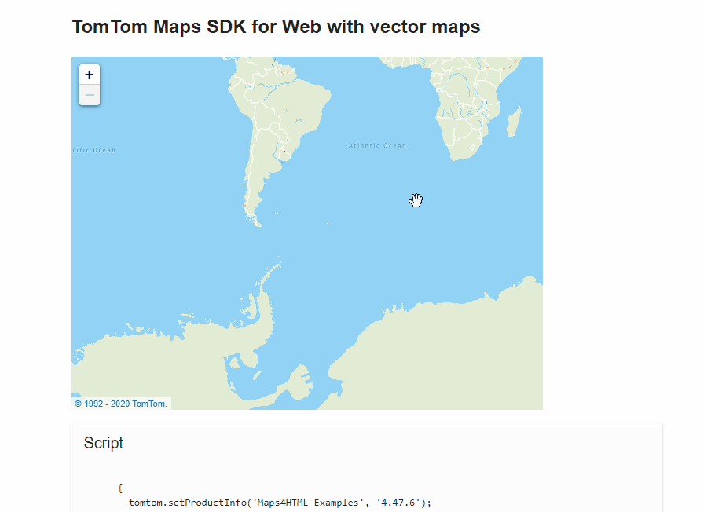

Focus Order Example

- "Google Maps Frame"
- "Terms of Use link"
- "View Larger Map link"
- "Zoom in button"
- "Zoom out button"
- "Clickable"
24 September 2020
W3C/OGC Joint Workshop Series on Maps for the Web
w3.org/2020/maps/
https://tinyurl.com/wcag-maps by Robert Linder
5/11 tools failed
<img src="logo.svg" alt="[Vendor] Logo">
<button aria-label="Zoom In">+</button>
11/11 tools failed
<button aria-label="Zoom In" disabled>+</button>
9/11 tools failed
7/11 tools failed
<-- Use this -->
<button>Please just style me</button>
<-- Not this -->
<a href="#">I'm not a button, I'm a link!</a>
1/11 tools failed
If a keyboard shortcut is implemented in content using only letter, punctuation, number, or symbol characters, then one of these alternatives must available:
2/11 tools failed
Interactable elements should be focusable according to the reading order.

7/11 tools failed
outline: none)
without replacing them with your own styles
9/11 tools failed
Content should have a lang attribute.
<-- Parent level language -->
<html lang="en">
<-- String level language -->
<span lang="zh">香港</span>
2/11 tools failed

24 September 2020
W3C/OGC Joint Workshop Series on Maps for the Web
w3.org/2020/maps/